Extraire (décompressez) le fichier CDIAct.7z une fois téléchargé.
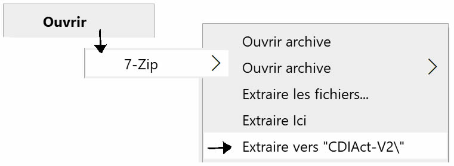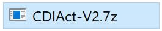CDIAct est proposé en un dossier compressé au format "zip". Si vous ne disposez pas d'un logiciel de décompression de ce format, vous pouvez télécharger 7-ZIP ici.
7-Zip est un logiciel open source. La plupart du code est sous licence GNU LGPL. 7-Zip fonctionne sous Windows 10 / 8 / 7 / Vista / XP / 2019 / 2016 / 2012 / 2008 / 2003 / 2000.
Le fichier des emprunteurs utilisé est un simple fichier texte, au format csv.
ll ne contient que 3 champs, le nom (et le prénom), la classe et le numéro d'emprunteur, séparés par des points virgules (;) et terminé par un "retour chariot".
C'est la méthode pour ceux qui n'auraient pas BCDI ou voudraient tout gérer à la main.
Avec le bloc-notes de Windows ou, beaucoup mieux, un éditeur libre de type Notepad++, que vous pouvez télécharger ici, ouvrez le fichier "cartes.csv" que vous trouvez dans le répertoire "sources".
La première ligne indique le nom des champs (sans espace, en majuscules) :
em;cl;id
Ne modifiez pas cette première ligne, vos données commencent à la deuxième.
Ajoutez les valeurs des champs (NOM prénom;classe;numéro d'emprunteur), elles-aussi séparées par des points virgules (;).
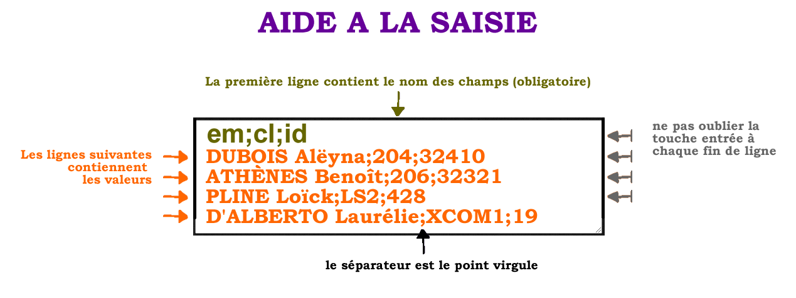Le champ "em" correspond à l'emprunteur, "cl" pour la classe et "id" pour le numéro unique de l'emprunteur. Commencez par exemple par 1 puis incrémentez la valeur.
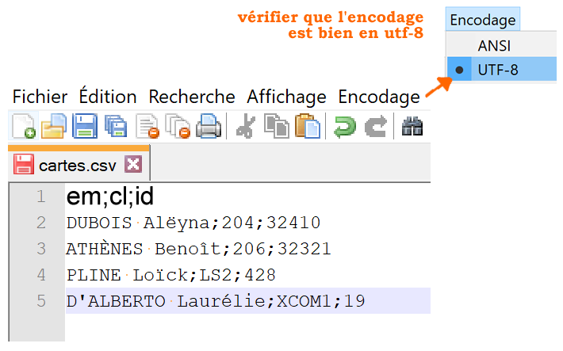N'oubliez pas d'enregistrer ce fichier une fois vos saisies terminées.
Schématiquement, il s'agit de chercher tous les emprunteurs et de les exporter dans un fichier nommé "cartes.csv", nom obligatoire, via un modèle de rapport, "empClassNum.fr3" qui se trouve dans le répertoire "sources".
La procédure est détaillée dans la vidéo ci-contre ou en mode texte ci-dessous.
1 Exporter le fichier des emprunteurs
Cherchez les emprunteurs que vous voulez exporter. Le plus souvent ce sont tous vos emprunteurs.
Pour cela, faire une recherche dans
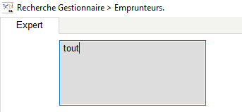
2 Lancez la recherche
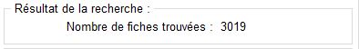
3 Sélectionnez le format
Dans les formats de sortie, sélectionnez 'Rapports' puis le format de sortie "empClassNum.fr3" qui se trouve dans le répertoire "sources" de CDIAct), cochez "Résultats sur → Disque".
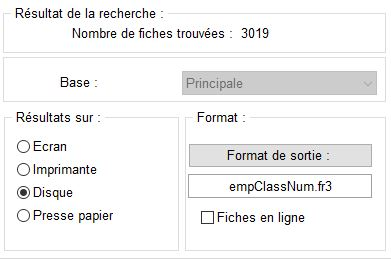
4 Voir
Cliquez sur le bouton "voir" puis cochez "Format MsWord"
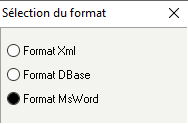Décochez "Exporter les ressources"
5 Enregistrez
Enregistrez avec le nom "cartes.csv" (Attention ! Ce nom est impératif, ne pas le modifier).
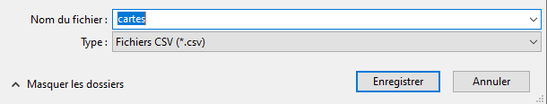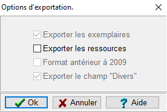
L'exportation de vos emprunteurs est terminée. Un message vous informe du bon déroulement.
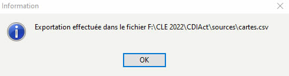Si vous constatez des problèmes d'accentuation de votre fichier, le plus simple est de l'ouvrir avec Notepad++ et de le convertir en utf-8.
Pour cela ouvez le fichier cartes.csv avec NotePad++, cliquez sur "Encodage" puis sur "Convertir en
UTF-8".
Enregistrez
Cette étape va consister à rassembler vos données, emprunteurs, mot de passe 'hashé' et nom d'établissement, et à générer un fichier de gestion au nom unique (Exemple : yOH4bP20.html).
Ce fichier va vous permettre à la fois d'installer votre configuration en "UN" clic, mais aussi d'accéder aux statistiques, à la liste des présents, de faire une sauvegarde ou une restauration etc.
Bref, de gérer votre application.
Pour cela, cliquez sur le bouton ci-dessous pour sélectionner et télécharger le fichier 'cartes.css' que vous avez exporté (avec BCDI) ou saisi et enregistré à l'étape précédente.
En fonction de votre navigateur, une fenêtre vous informe au bout de quelques secondes que votre fichier unique (par exemple '1E51QVKV.html') a été créé et enregistré sur votre disque, ou que vous pouvez l’enregistrer ou vosu souhaitez.
Ce fichier devra être enregistré dans le dossier gestion de votre configuration. C'est ce fichier qui vosu permet de faire l'ensemble de la gestion de votre application CDIAct personnalisée.
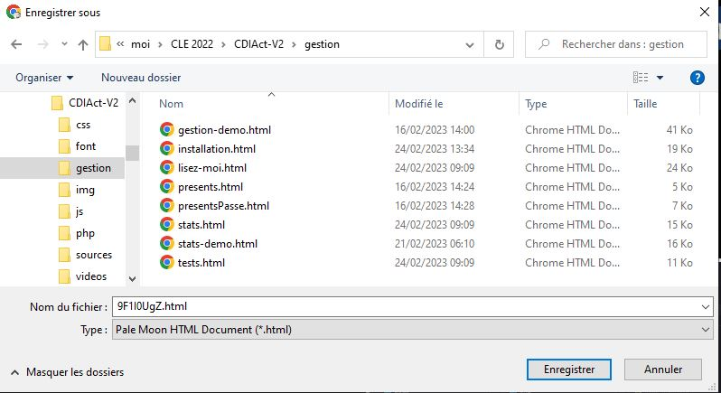Si pour une raison quelconque, ce n'était pas le cas (par exemple en raison de règles de sécurité propres à votre installation), vous pouvez voir et enregistrer votre configuration à cette adresse. Enregistrez la page dans votre répertoire gestion.
Attention ! Page temporaire.
1 Copier-coller ce fichier dans le répertoire 'gestion' de votre application.
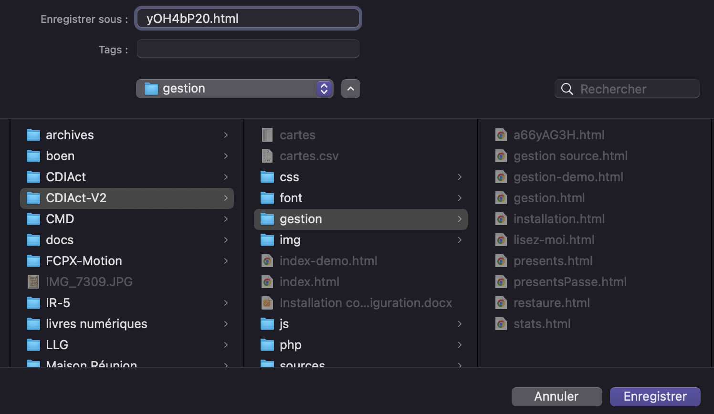
2 Copier-coller CDIAct sur la machine de production (cela fonctionne également sur une clé USB ou une tablette).
3 Ouvrir le fichier au nom unique, par exemple '1E51QVKV.html' du répertoire gestion avec un navigateur.
4 Saisir votre mot de passe.
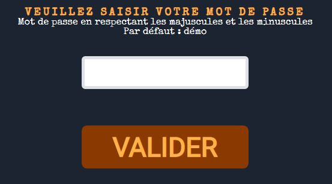5 Cliquer sur le bouton 'installer la configuration'